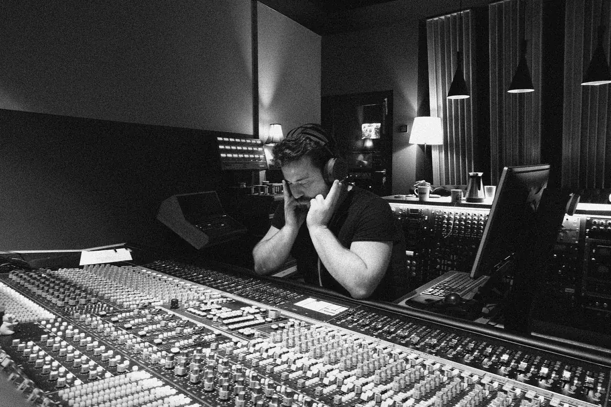
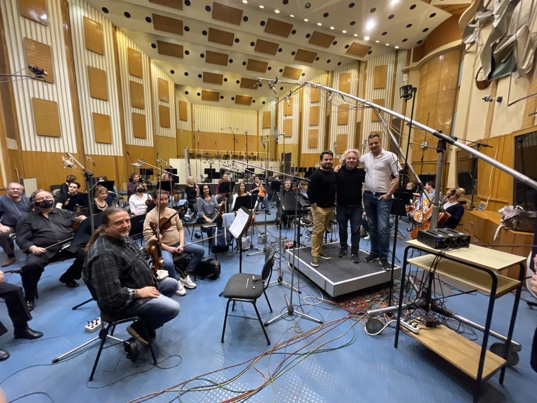
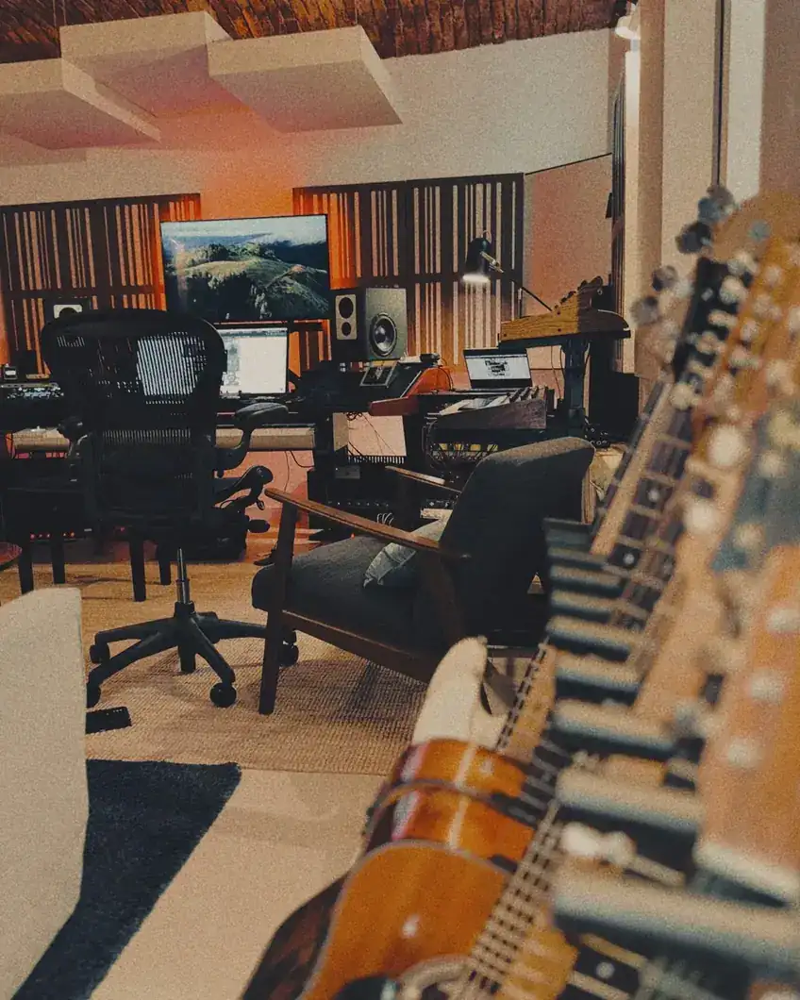
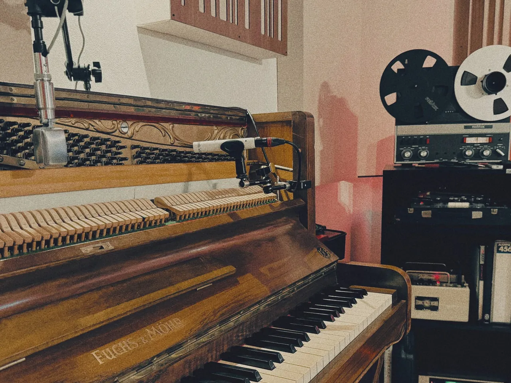
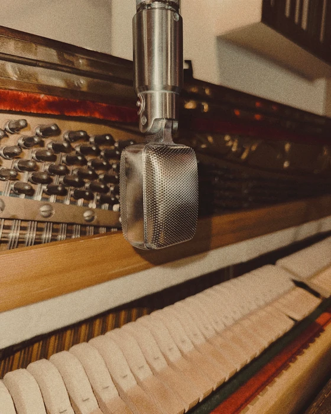
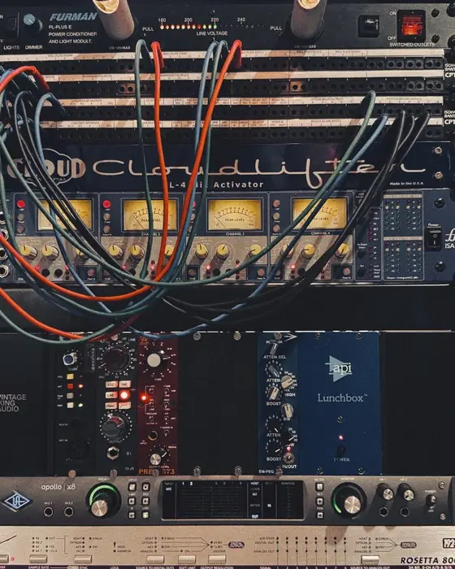
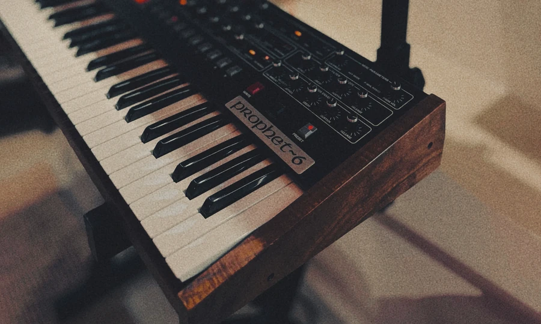
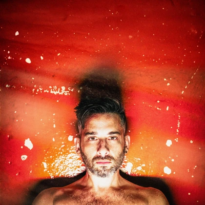
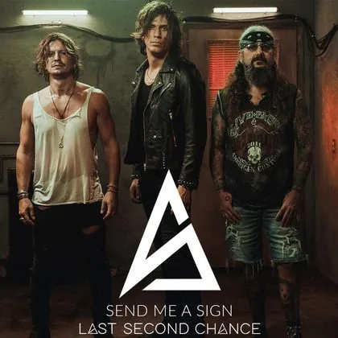

Producer · Songwriter
Un suono fisico,
che vive e rimane
Jacopo Sam Federici è un producer, composer e arrangiatore. Il suo lavoro attraversa scrittura, produzione, recording e orchestrazione, con un approccio che unisce visione musicale, precisione tecnica e rapidità operativa.
Lavora su progetti discografici, sessioni orchestrali e brief internazionali, costruendo ogni produzione intorno a un suono preciso, fisico e riconoscibile.
Insieme a Iacopo Pinna dà vita ai FET Bastards, duo di producer attivo tra Italia e Stati Uniti.

Budapest Art Orchestra - Eros Ramazzotti
Una cantina del XIX secolo
per un suono contemporaneo.
Volta Studio si trova sotto una cascina storica nel centro di Cambiago, alle porte di Milano.
Un'ex cantina lombarda con volte a botte in mattoni originali del XIX secolo, restaurata e trasformata in uno spazio contemporaneo, accogliente e capace di ispirare.
Trattamento acustico custom, strumenti selezionati, outboard analogico e sedici canali di conversione a 96 kHz convivono in un workflow pensato per lavorare in modo rapido, preciso e stimolante.
Setup completo →




Produzioni, sessioni,
orchestrazioni.
Una selezione di lavori che attraversa produzione, recording, mix, orchestrazione e scrittura. Progetti diversi, contesti diversi, un'unica direzione: dare alla musica una forma sonora riconoscibile, concreta e precisa.
Discografia completa →
